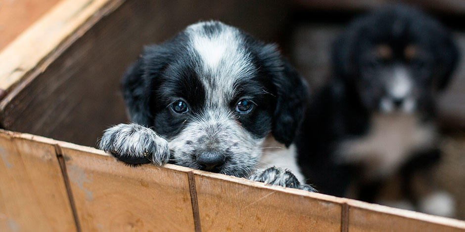

¿por qué adoptar a una mascota?
Le das una oportunidad de vida: Cuando nacen, los canales auditivos y sus ojos están cerrados al mundo. Durante su primera semana dependen enteramente de sus madres. Durante la segunda semana comenzarán a abrir los ojos aunque su visión no será muy clara. En la tercera semana comenzarán a entender el mundo que los rodea y su sentido del olfato y audición mejorarán notoriamente. Agradecimiento y vínculo afectivo con un perro adoptado: A cambio, la recompensa que vas a obtener es infinita. Aunque algunos de los perros que han pasado por estos procesos pueden ser temerosos, su capacidad de agradecimiento, a medida que se acostumbren a tu familia o a ti, llenará de felicidad tu día a día, porque adoptar un perro contribuye a generar un vínculo de amor mutuo e incondicional.
